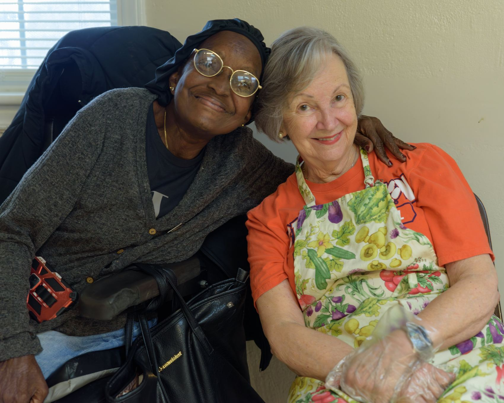
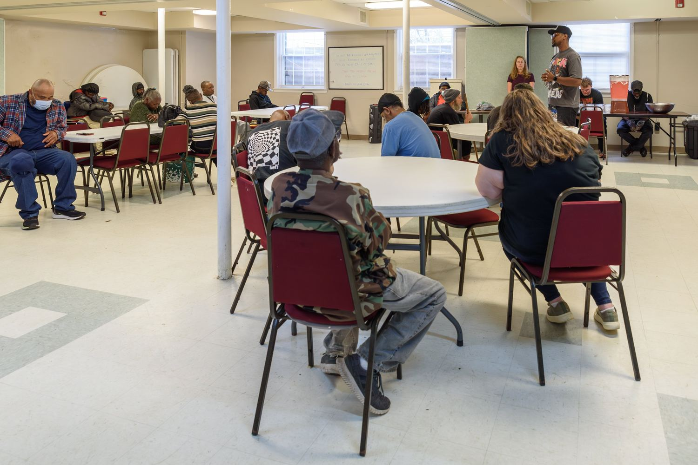
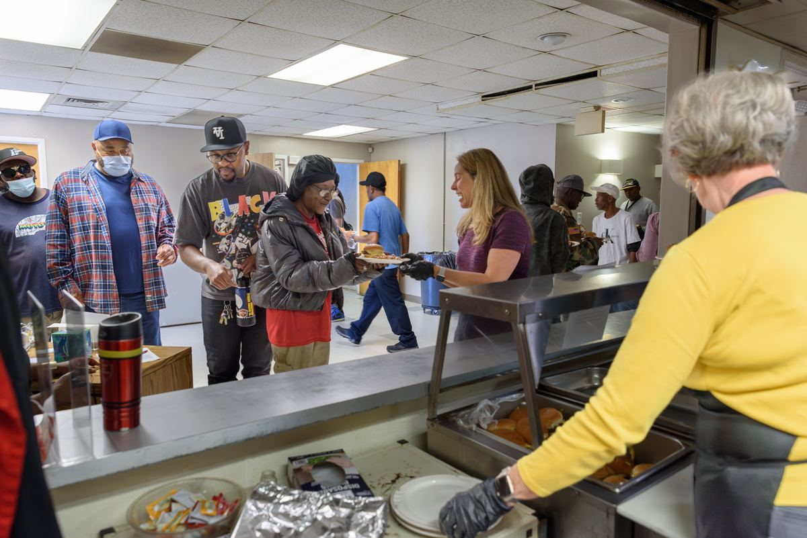
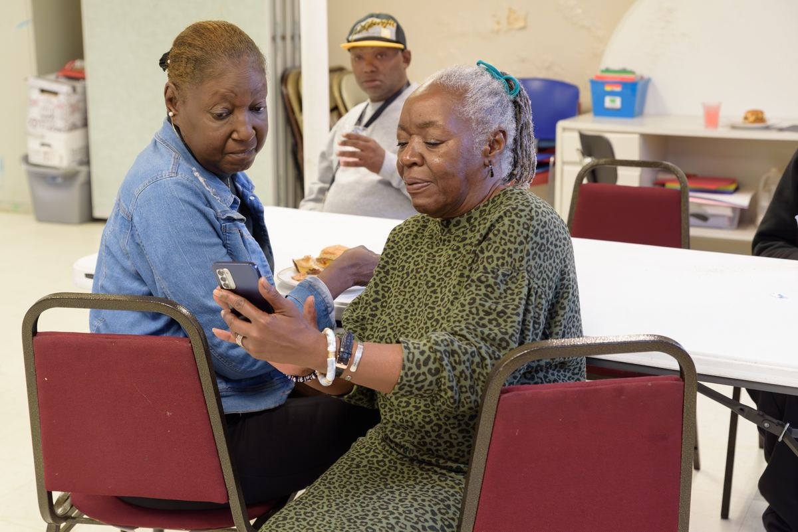
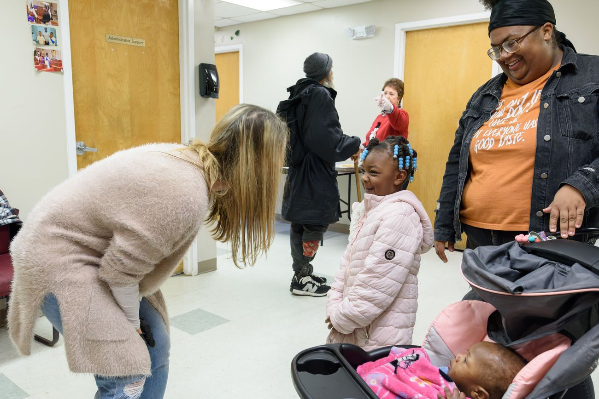
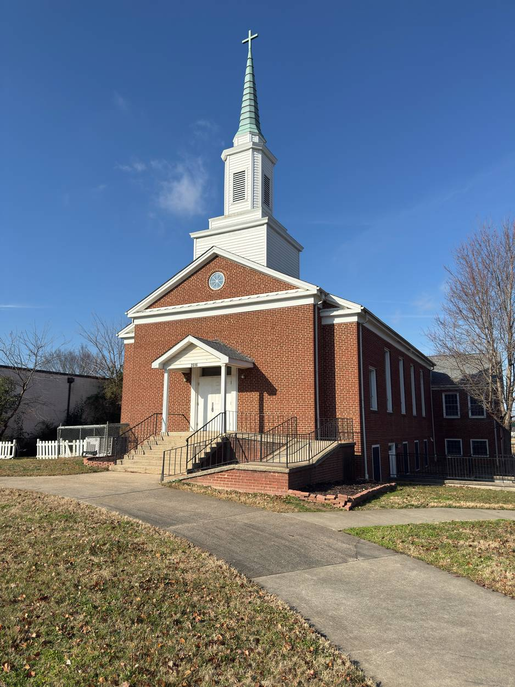
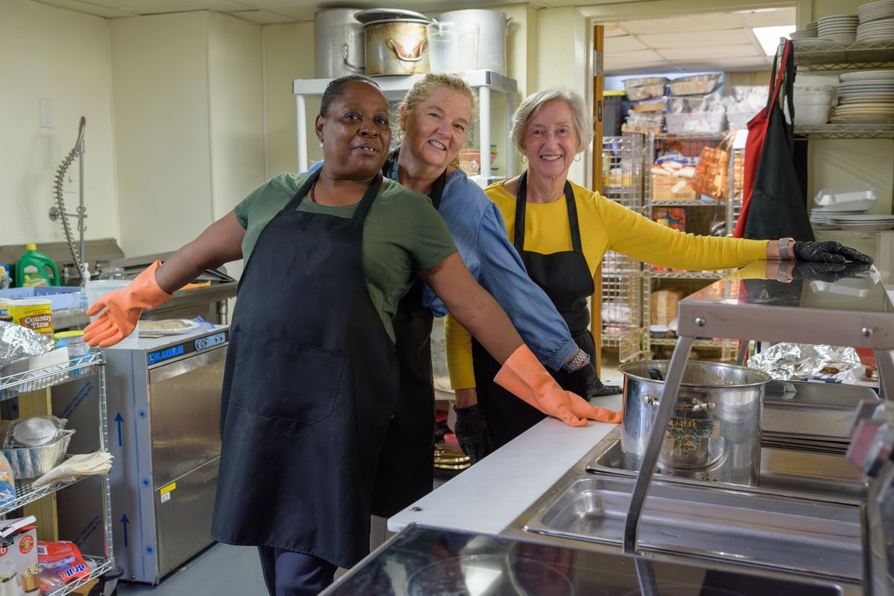

2516 South Tryon Street
A neighborhood church on South Tryon.
We sit between Brookhill Village and Southside Homes, in a part of Charlotte that is changing faster than most people living here ever asked for. Our doors are open in the middle of that. Whoever you are, whatever kind of week you've had, there is room for you here.
- Sunday Worship
- 11:00 AM
- Trinity's Table
- Tuesday & Thursday, 11:30 AM A hot meal. No sign-up, no cost, no questions.

Who we are
A neighborhood church transforming lives with love, justice, and community.
Twice a week, the hall fills up.
People come in off South Tryon, from the bus stop, from around the corner. Somebody prays. Plates go out. For an hour nobody in the room is a case or a client. We are just neighbors eating together, which is a harder and better thing than charity.
You do not need to sign anything or explain yourself. Come hungry, come early, bring somebody with you. Children are welcome and so are the people who bring them.
Tuesdays and Thursdays at 11:30 AM.




Gospel, hymns, and preaching that takes your life seriously.
Our worship is rooted in the Black church tradition. There is music you can feel and preaching that reads Scripture honestly, names what is wrong, and still insists on grace. Communion is the first Sunday of the month, and the table is open. You do not have to be a member and you do not have to have your life sorted out.
Come in your work clothes. Come late if late is what you have. Nobody here is keeping score.

Where we are, and what is happening here.
South End is being rebuilt around us. Cranes go up, rents follow, and families who have held this ground for generations are being pushed toward the door.
That is not weather. It is a set of decisions that people made, which means it is a set of decisions that people can make differently. We go to the meetings. We ask the questions that make the room uncomfortable. We keep after the folks with the power to change it.
And in the meantime we keep the lights on and the doors unlocked, because supper and justice come from the same gospel. We are not a service provider that happens to pray. We live here.

Reside
We live alongside our neighbors and love them with openness and inclusion.
Presence
We practice being present to God, to one another, and to those the city overlooks.
Grow
We listen for what is needed and pursue transformation in self, neighborhood, and city.
Be Bold
We act courageously, sacrifice when we must, and speak truth to power for God's justice.
Your giving sets the table.
Every gift goes into meals served, children fed, utilities kept on, and a church that stays put in a neighborhood under pressure.
Give online
Secure one-time or recurring gifts through Tithe.ly. You can also mail a check or drop it in the plate on Sunday.
Give nowBy mail: South Tryon Community Mission (Charlotte) UMC, 2516 South Tryon Street, Charlotte, NC 28203. We are a 501(c)(3) under the United Methodist Church group ruling. EIN 56-2256891.
Come see us.
- Sunday Worship
- 11:00 AM
- Trinity's Table
- Tuesday & Thursday, 11:30 AM
- Phone
- (980) 939-6463
Say hello
Questions, prayer requests, or you want to help. Someone reads every one of these.